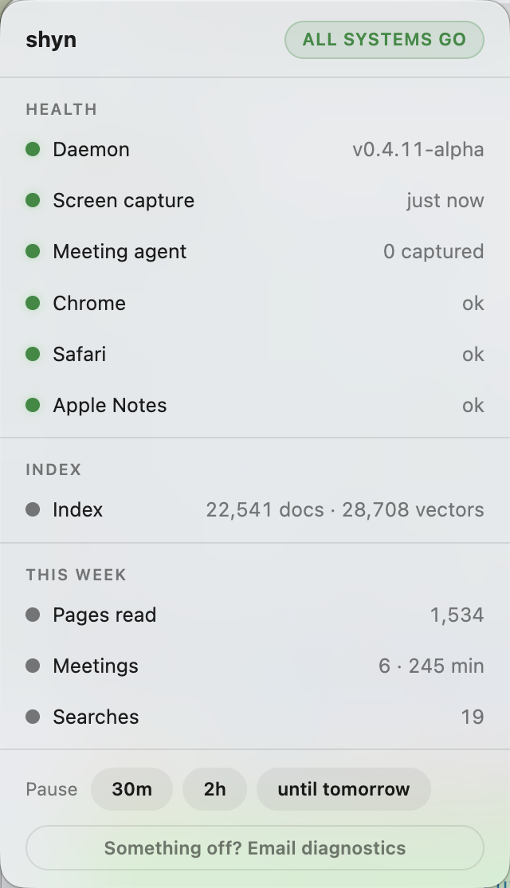

There is exactly one screenshot of shyn we can take without staging anything, and it comes from the most sensitive machine we have — the one that remembers everything its owner does.

That is not luck. It is a rule that shapes more of shyn's design than any other: every surface except the answer itself shows counts, never content. The only place your memory comes out is a search result, delivered over a local socket to an AI you pointed at it. Everything else — everything a passerby, a screenshot, a bug report, or a log file might see — is numbers.
Where the rule bites
- The popover. Health of the agents, size of the index, pages read this week. A stranger glancing at your screen learns you read 1,534 pages. Not one of them.
- Usage stats. shyn counts that a search happened. It never stores what you searched for. Your questions to your own memory are not themselves memorized.
- Logs. The daemon does not log document content — not at debug level, not at error level, not when it crashes. A stack trace that quoted the page you were reading would be a leak wearing an engineering costume.
- Diagnostics. When something breaks,
shyn diagnoseprints versions, service states, and error lines — zero content — and you paste it wherever you choose. Support should never require confession. - The marketing. The conversation screenshots on this site show a fictional person's memory, built for the camera. That story is entry no. 001.
The cost, honestly
This rule is inconvenient roughly weekly. Debugging a ranking problem without being able to log what was ranked is slower. Reproducing a capture bug without capturing the capture is annoying. Every time, the shortcut is one log line away, and every time the answer has to be no — because a memory tool that leaks a little, structurally, will eventually leak a lot, socially. The register is yours. Even we only ever get to count it.